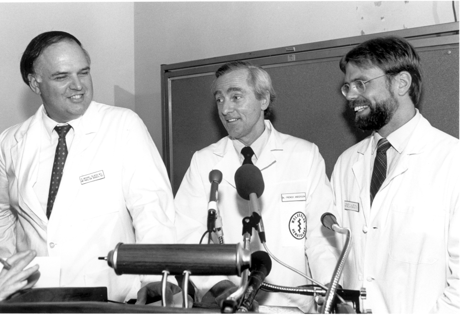

Who Founded Gene Therapy?
R. Michael Blaese, W. French Anderson, and Kenneth Culver at a press conference announcing the start of the first gene therapy trial for treating children with severe combined immunodeficiency, 13 September 1990. Source: National Cancer Institute.
R. Michael Blaese, W. French Anderson, and Kenneth Culver were key figures in the first human gene therapy trial on September 14, 1990. They treated a young girl, Ashanti DeSilva, who had Severe Combined Immunodeficiency (SCID) caused by a deficiency in the ADA enzyme. The team extracted her T cells, inserted a functional ADA gene using a retroviral vector, and reintroduced the modified cells into her body. This therapy improved her immune function and marked a historic milestone in gene therapy, proving its potential to treat genetic disorders and laying the foundation for future advancements in the field.